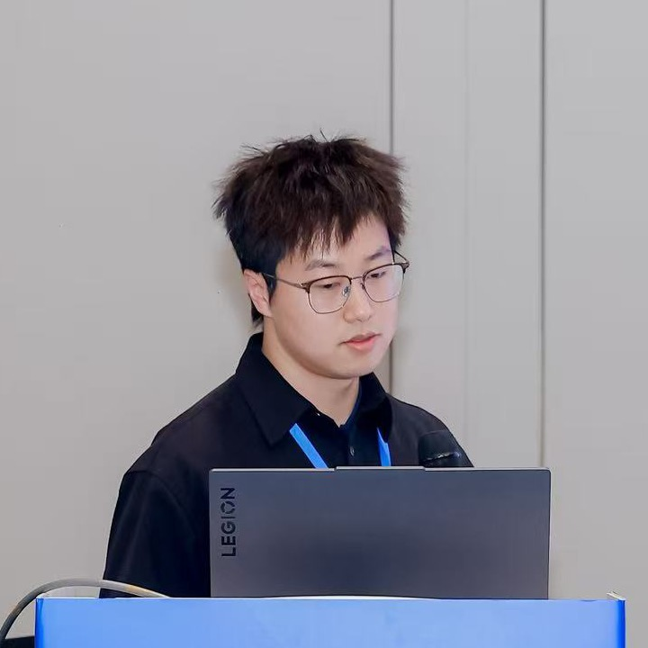

About Me

GLGuowangchen Liu 刘国王辰
I lead the Watershed Environment Lab at Peking University. My research sits at the interface of hydrology, biogeochemistry, and data science. I develop watershed models coupled with machine learning to understand and manage non-point source pollution, and I synthesize global datasets to quantify how humans have altered riverine nutrient fluxes to the ocean. My recent work on human alterations to global riverine phosphorus fluxes was published in Science Advances.
Education
- 2018 – 2024 Ph.D., School of Environment, Beijing Normal University
- 2014 – 2018 B.S., Tianjin Agricultural University
News
- 2026-01Our paper on a process-model-informed graph attention network for daily nutrient simulation is now online at Water Research.
- 2025-12Our study “Human alterations to global riverine phosphorus fluxes to the ocean” is published in Science Advances! 🎉
- 2025-06New collaborative paper on the spatiotemporal variability of non-point source pollution appears in Water Research.
- 2024-05Our paper coupling machine learning and mechanistic watershed models is published in Journal of Hydrology.
Publications
underlined = Guowangchen Liu · Full list on Google Scholar
Selected First-Author Papers
-
Human alterations to global riverine phosphorus fluxes to the ocean
Science Advances, 11(50), eady5884 (2025)
-
Journal of Hydrology, 636, 131264 (2024)
-
Balancing water quality impacts and cost-effectiveness for sustainable watershed management
Journal of Hydrology, 621, 129645 (2023)
-
Science of The Total Environment, 725, 138091 (2020)
-
New framework for optimizing best management practices at multiple scales
Journal of Hydrology, 578, 124133 (2019)
-
A fast and robust simulation-optimization methodology for stormwater quality management
Journal of Hydrology, 576, 520–527 (2019)
Co-Authored Papers
-
Improving watershed-scale daily nutrient simulation using a process-model-informed graph attention network with multi-source data integration
Water Research, 125532 (2026)
-
Integrating spatiotemporal variability of non-point source pollution and best management practice efficiency to improve adaptive watershed management
Water Research, 284, 124042 (2025)
-
Changes in the effectiveness of low impact development practices and their role in optimal design
Journal of Hydrology, 660, 133505 (2025)
-
Reducing coal use is key to curbing toxic trace elements emissions in China driven by carbon neutrality policy
Global Environmental Change, 91, 102965 (2025)
-
Identifying spatial drivers of soil heavy metal pollution risk integrating positive matrix factorization, machine learning, and multi-scale geographically weighted regression
Journal of Hazardous Materials, 485, 136841 (2025)
-
Enhancing watershed management through adaptive source apportionment under a changing environment
npj Clean Water, 7, 29 (2024)
-
The effect of social economy–water resources–water environment coupling system on water consumption and pollution emission based on input-output analysis in Changchun city, China
Journal of Cleaner Production, 423, 138719 (2023)
-
Copula-based analysis of socio-economic impact on water quantity and quality: a case study of Yitong River, China
Science of The Total Environment, 859, 160176 (2023)
-
New method for scaling nonpoint source pollution by integrating the SWAT model and IHA-based indicators
Journal of Environmental Management, 325, 116491 (2023)
-
Source appointment at large-scale and ungauged catchment using physically-based model and dynamic export coefficient
Journal of Environmental Management, 326, 116842 (2023)
-
New framework for nonpoint source pollution management based on downscaling priority management areas
Journal of Hydrology, 606, 127433 (2022)
-
An integrated source apportionment method by incorporating spatial location information and source-transfer-sink simulation
Journal of Cleaner Production, 379, 134741 (2022)
-
Unexpected river water quality deterioration due to stormwater management in an urbanizing watershed
Water Resources Research, 57(12), e2021WR030181 (2021)
Contact
Watershed Environment Lab
Guowangchen Liu
College of Environmental Sciences and Engineering
Peking University, Beijing 100871, China